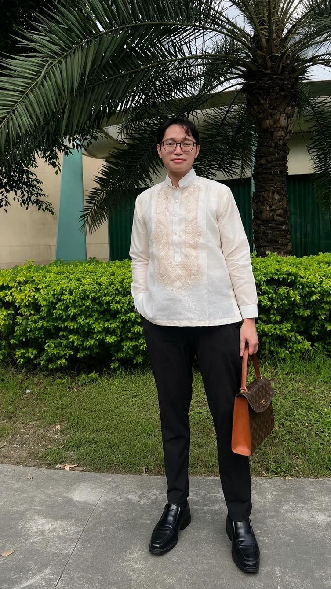

PSYCHOLOGY → MEDICINE → PSYCHIATRY
Isaac A.
Delos Reyes.
Decoding life,
one molecule at a time.
A record of the questions, small breakthroughs, and imperfect days that are shaping the physician I hope to become.
Open my learning journal ↗
01 / THE PERSON BEHIND THE NOTESUnderstanding at the molecular level.↗
MIND. MOLECULES. MEDICINE.
Understanding
people starts
with looking deeper.
My goal is to become a psychiatrist. Biochemistry is helping me understand the science beneath the human experience.
My name is Isaac A. Delos Reyes, and I am currently pursuing my journey in medicine. Before entering medical school, I completed my Bachelor of Science in Psychology at Far Eastern University–Manila and became a Registered Psychometrician.
My background in psychology has given me a strong foundation in understanding human behavior, emotions, cognition, and mental processes, which I hope to further develop through the study of medicine. My aspiration to become a psychiatrist motivates me to continuously learn not only about the human mind, but also about the biochemistry that influences it.
A journal of learning.
Not a claim of mastery.
This e-portfolio presents my journey through Biochemistry, documenting the lessons, challenges, reflections, and learning experiences I encountered throughout the course. From understanding basic principles to applying them to medical situations, each topic has helped me appreciate how closely the molecular processes of the body are connected to health and disease.
The days that
built the foundation.
Open an entry to read the full reflection,
the difficult parts, and the connections that stayed.
01DiscussionA less intimidating beginning.Introduction to Biochemistry · Water & pH
During my first discussion in Biochemistry, I was initially nervous because of the stories and experiences I had heard and read about the subject. Since our first topic was the Introduction to Biochemistry, I expected to feel overwhelmed by the amount of information. However, the discussion was introduced in a light-hearted and engaging manner, which made the subject feel more approachable than I had anticipated.
Although there were concepts that were unfamiliar to me, I realized that understanding them became easier through reviewing them after the discussion. After each discussion, I made it a habit to reread my notes and skim my textbooks to strengthen my understanding. This experience taught me that Biochemistry may be challenging, but with consistent effort, curiosity, and willingness to review, difficult concepts can become more manageable.
Highlights of my learning
- Biochemistry provides the chemical foundation of medicine, explaining how molecules interact and support life.
- Water’s polarity and hydrogen bonding give it properties essential to biological processes.
- pH, acids, bases, and buffers help maintain the environment necessary for biochemical reactions.
How my understanding changed
I thought Biochemistry was about memorizing complicated chemical concepts. Now, I understand that those concepts explain the body’s function, disease, physiology, and treatment.
Connecting the dots
Water → pH → hydrogen bonding → molecular interactions → biomolecule structure and function.
From Biochemistry to Medicine
Understanding pH, buffers, water, and molecular interactions provides a foundation for interpreting laboratory results, medications, and patient care.
02AssessmentThe first quiz. An honest checkpoint.First Biochemistry quiz · Chapters 1–2
Seeing my scores after my very first quiz, I felt that I was lacking or had not completely understood Chapter 2. It was a difficult moment, but it also showed me that I needed to change how I prepared.
Core memory
I should learn to manage my time properly and use external resources to maximize learning. The mnemonic that stayed with me: nonpolar = hydrophobic, because “no water.”
My muddiest point
My first quiz score made me realize that my understanding of Chapter 2 was not yet complete.
03Case discussionLearning to think through the uncertainty.First SGD · The Mystery Behind the Waters
I was especially nervous about this activity because it was my first time doing an SGD, and I was unsure whether the answers I was writing were correct. I did not know how to answer like a doctor. The case required me to apply what I had learned about water, pH, buffers, and acid-base balance to a clinical scenario.
At first, I found myself questioning whether I was approaching the questions correctly. However, working through the case allowed me to review and apply the concepts I had learned from the lectures and readings. It also taught me that I do not always have to be completely confident at the beginning; what matters is being willing to analyze, review, and learn from the process.
This first SGD became an important experience for me because it helped me become more comfortable with applying biochemical concepts rather than simply memorizing them.
04DiscussionA sequence starts to become a story.Second discussion & quiz aftermath · Protein structure
Highlights of my learning
- A protein’s primary structure is its specific amino acid sequence, the foundation for higher levels of structure.
- Primary structure helps explain protein function and identify changes that may be associated with disease.
How my understanding changed
Before, I thought proteins were simply chains of amino acids. Now, I understand that the specific sequence and properties of each amino acid influence the protein’s structure and function.
Connecting the dots
Amino acids → peptide bonds → primary protein structure → protein shape → protein function.
From Biochemistry to Medicine
Changes in protein structure or sequence can affect function and contribute to disease.
Core memory
Column chromatography felt like a real scientific and medical application rather than a concept to memorize, which intrigued me to learn more.
My muddiest point
I had not passed a single Biochemistry quiz, and I felt as though my best was not enough.
05ReviewThe chapters were never separate.Online classes · Long-exam review · Chapters 1–6
Highlights of my learning
- During online long-exam preparation, I realized that Chapters 1–6 are interconnected and provide a foundation for more complex biochemical processes.
How my understanding changed
Before, I thought the chapters were separate topics. Now, I understand that each concept builds upon another.
Connecting the dots
Basic chemistry → water and pH → amino acids → proteins → protein structure and function.
From Biochemistry to Medicine
Molecular interactions and protein structure will help me understand physiology, disease processes, laboratory findings, and pharmacology.
Core memory
Biochemistry can be understood with persistent effort.
My muddiest point
It was my first long exam, and I did not know what to expect. The volume of material was overwhelming, especially with long exams in other subjects. I was trying my best to manage my time.
06ReviewSlowing down to understand the reaction.Prelims preparation · Enzymes & kinetics
Highlights of my learning
- Enzymes act as biological catalysts, allowing important reactions to occur more efficiently.
- Michaelis–Menten kinetics, Km, and Vmax help describe enzyme behavior.
- Different types of enzyme inhibition affect reactions in different ways.
How my understanding changed
Before, I knew enzymes made reactions faster. Now, I understand that they lower activation energy and that their activity can be influenced by conditions and inhibitors.
Connecting the dots
Protein structure → enzyme structure → active site → substrate binding → enzyme activity.
From Biochemistry to Medicine
Changes in enzyme activity can indicate disease or tissue damage. Many medications inhibit or modify enzyme activity, connecting kinetics with laboratory findings and pharmacology.
Core memory
I learned to approach these topics slowly instead of cramming, because there is a lot to understand.
My muddiest point
Class suspensions led to adjustments in lessons and quizzes. Learning enzymes remotely was challenging, but I tried my best to understand the concepts.
Preparing.
Revisiting.
Trying again.
The notes, online sessions, and study spaces
behind long-exam and prelims preparation.
A pass.
And a little more
self-compassion.
After the long exams, I was relieved and grateful to find out that I had passed. The sleepless nights of studying and reviewing were worth it, and the experience taught me that progress does not always have to happen all at once. Sometimes, taking things one step at a time is enough to keep moving forward.
I also learned to be more forgiving of myself. There are times when I do not immediately understand a topic or when I take longer than others to learn, but I am beginning to realize that this does not mean I am incapable. I am grateful to have a strong support system that reminds me to keep going, especially during difficult moments.
I would like to give myself a pat on the back for making it through the long exams and keeping up despite the pressure. At the same time, I recognize that there is still so much I need to improve. I know there will be more challenging exams and moments when I will doubt myself, but I want to continue persevering and doing my best.
I am still a work in progress, learning not only the lessons in medical school but also how to become more patient and confident in myself. Every challenge brings me one step closer to the physician—and ultimately, the psychiatrist—I hope to become.
Same dream.
Different coffee shops.
A few pages from life outside the lecture hall.
Finding the focus—and the space—to keep going.
THE PEOPLE WHO HELP ME KEEP GOING
Progress feels
lighter with
a support system.
I am grateful to have people who remind me to keep going, especially during difficult moments. These are some of the people and moments behind that encouragement.
STILL MOVING FORWARD.
One setback
doesn’t define
the doctor
I can become.
During the prelims, I unfortunately fell short by five points. Looking back, I realized that I was not able to study the succeeding chapters as thoroughly as I should have. I think it was largely because of poor time management and the burnout I experienced after several long exams.
Although failing was disappointing and I spent much of the day overthinking the hows and whys, it helped me identify the areas I need to improve. Instead of letting the result discourage me, I hope to manage my time better in the future.
I know I still have a lot to improve, but I remind myself that one setback does not define my ability to become a doctor. I will continue to learn from my mistakes, adjust, and persevere.
“If kailangan kong gapangin tong biochem para pumasa, gagapangin ko.”
The motto I’m carrying into the next part of this journey.
Learning takes time.
I’m choosing to keep going.
My journey through Biochemistry taught me that learning takes time, patience, and perseverance. Despite the challenges and setbacks, I learned to appreciate my progress and use my mistakes as opportunities to improve. I know I still have much to learn, but I will continue moving forward one step at a time as I work toward becoming the psychiatrist I aspire to be.
Back to the beginning ↑Isaac A. Delos Reyes